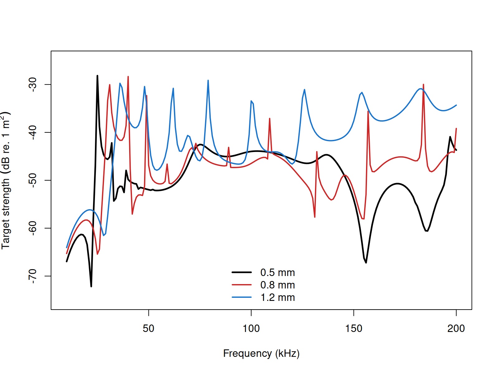

Elastic-shelled sphere implementation
Source:vignettes/essms/essms-implementation.Rmd
essms-implementation.RmdacousticTS implementation
These pages are grounded in the classical elastic-shell scattering literature for fluid-filled spherical shells (Goodman and Stern 1962; Faran 1951; Stanton 1990).
The acousticTS package uses object-based scatterers so the same
implementation pattern carries across models: create a scatterer, run
target_strength(), inspect the stored model output, and
then compare a small set of physically important inputs. For
ESSMS, the required object class is ESS, which
combines a spherical shell, an optional internal fluid, and the elastic
constants required for the shell solution.
ESSMS is unvalidated in the package. The benchmark
family exists, but the implementation does not return finite full-grid
TS values across those shell-sphere comparison sweeps, so
this page documents behavior and limitations rather than benchmark-grade
agreement.
Elastic-shelled sphere object generation
An ESS object can be created with
ess_generate(). For the implementation below, the shell is
described by its outer radius and thickness, while the shell material is
described by density, sound speed, and elastic constants. The inner
fluid can be provided using either contrasts or absolute material
properties.
library(acousticTS)
sphere_shape <- sphere(radius_body = 10e-3, n_segments = 80)
shelled_sphere <- ess_generate(
shape = sphere_shape,
radius_shell = 10e-3,
shell_thickness = 0.8e-3,
density_shell = 2565,
sound_speed_shell = 3750,
density_fluid = 1077.3,
sound_speed_fluid = 1575,
E = 7.0e10,
nu = 0.32
)
shelled_sphere## ESS-object
## Elastic-shelled scatterer
## ID: UID
## Material:
## Shell:
## Density: 2565 kg m^-3
## Sound speed: 3750 m s^-1
## Young's modulus (E): 7e+10 Pa
## Poisson's ratio: 0.32
## Bulk modulus (K): 64814814814.8148 Pa
## Shear modulus (G): 26515151515.1515 Pa
## Internal fluid-like body:
## Density: 1077.3 kg m^-3
## Sound speed: 1575 m s^-1
## Shape:
## Shell:
## Radius: 0.01 m
## Diameter: 0.02 m
## Outer thickness: 8e-04 m
## Internal fluid-like body:
## Radius: 0.0092 m
## Diameter: 0.0184 m
## Propagation direction of the incident sound wave: 1.571 radiansCalculating a TS-frequency spectrum
The target_strength() wrapper initializes the ESSMS
model, performs the modal calculation, and stores the results back
inside the same object. As with the rest of the package, frequency is
supplied in Hz.
frequency <- seq(38e3, 120e3, by = 4e3)
shelled_sphere <- target_strength(
object = shelled_sphere,
frequency = frequency,
model = "essms"
)Extracting model results
Model results can be extracted either visually or directly through
extract().
Accessing results
## $frequency
## [1] 38000 42000 46000 50000 54000 58000 62000 66000 70000 74000
## [11] 78000 82000 86000 90000 94000 98000 102000 106000 110000 114000
## [21] 118000
##
## $ka_shell
## [1] 1.616199 1.786325 1.956451 2.126577 2.296703 2.466830 2.636956 2.807082
## [9] 2.977208 3.147334 3.317461 3.487587 3.657713 3.827839 3.997965 4.168092
## [17] 4.338218 4.508344 4.678470 4.848596 5.018722
##
## $ka_fluid
## [1] 1.486903 1.643419 1.799935 1.956451 2.112967 2.269483 2.425999 2.582515
## [9] 2.739032 2.895548 3.052064 3.208580 3.365096 3.521612 3.678128 3.834644
## [17] 3.991160 4.147676 4.304192 4.460709 4.617225
##
## $f_bs
## [1] 8.843149e-03-0.0015569837i -3.988748e-04-0.0013454280i
## [3] 7.933887e-04-0.0020808975i 3.758589e-03-0.0025164450i
## [5] 1.449933e-03-0.0025584566i 1.445879e-03-0.0027217379i
## [7] 2.665126e-04-0.0029960130i 1.988643e-03-0.0033577386i
## [9] 6.537530e-03+0.0004434971i 2.481196e-03+0.0060923410i
## [11] -2.502007e-05+0.0051816261i -1.487989e-04+0.0046774712i
## [13] 3.699388e-04+0.0044661894i 1.356868e-04+0.0043078778i
## [15] 1.445075e-03+0.0040700486i 2.348643e-03+0.0038576369i
## [17] 3.160952e-03+0.0039211202i 3.337304e-03+0.0043504980i
## [19] 3.915986e-03+0.0047782567i 2.212936e-03+0.0050012593i
## [21] 5.261250e-04+0.0046749085i
##
## $sigma_bs
## [1] 8.062548e-05 1.969278e-06 4.959600e-06 2.045949e-05 8.648005e-06
## [6] 9.498424e-06 9.047123e-06 1.522911e-05 4.293599e-05 4.327295e-05
## [11] 2.684988e-05 2.190088e-05 2.008370e-05 1.857622e-05 1.865354e-05
## [16] 2.039748e-05 2.536680e-05 3.006443e-05 3.816668e-05 2.990968e-05
## [21] 2.213158e-05
##
## $TS
## [1] -40.93528 -57.05693 -53.04553 -46.89105 -50.63084 -50.22348 -50.43490
## [8] -48.17325 -43.67179 -43.63783 -45.71058 -46.59538 -46.97156 -47.31043
## [15] -47.29239 -46.90423 -45.95734 -45.21947 -44.18316 -45.24188 -46.54988The extracted data.frame contains the modeled frequency,
complex backscattering amplitude f_bs, backscattering
cross-section sigma_bs, and target strength
TS.
Comparison workflows
Shell-thickness sensitivity
Shell thickness strongly affects the resonance structure of the ESSMS solution, so it is a natural first comparison when testing a new parameterization.

When you move from a tutorial object to a real calibration or biological shell, the next quantities to revisit are the shell elastic constants and the shell-to-fluid property contrast, because those control where the strongest modal features occur.
Benchmark source and current status
ESSMS does have a direct benchmark source in the Jech shell-sphere
family. The full-grid ESSMS sweep is a status check rather than a usable
\Delta table because the implementation
does not return finite TS values across the benchmark
grid.
| ESSMS case | Finite benchmark points matched | Max abs. \Delta TS (dB) | Mean abs. \Delta TS (dB) | Elapsed (s) | Status |
|---|---|---|---|---|---|
| Pressure-release interior shell | 0 | NA |
NA |
0.05 | no finite full-grid TS |
| Gas-interior shell | 0 | NA |
NA |
0.07 | no finite full-grid TS |
| Weakly scattering fluid-interior shell | 0 | NA |
NA |
0.05 | no finite full-grid TS |
The benchmarking story for ESSMS is simple. The external benchmark family exists and is the right one to use, but the implementation needs numerical stabilization before this page can present the same kind of benchmark-accuracy table shown for SPHMS, FCMS, and PSMS.
ESSMS also exposes m_limit, so the obvious next question
is whether the absence of finite full-grid values is just an overly
aggressive truncation choice. The table below checks that directly.
| ESSMS case | m_limit |
Finite benchmark points matched | Elapsed (s) | Status |
|---|---|---|---|---|
| Pressure-release interior shell | default rule | 0 | 0.04 | no finite full-grid TS |
| Pressure-release interior shell | 40 |
0 | 0.12 | no finite full-grid TS |
| Pressure-release interior shell | 20 |
0 | 0.05 | no finite full-grid TS |
| Gas-interior shell | default rule | 0 | 0.05 | no finite full-grid TS |
| Gas-interior shell | 40 |
0 | 0.13 | no finite full-grid TS |
| Gas-interior shell | 20 |
0 | 0.07 | no finite full-grid TS |
| Weakly scattering fluid-interior shell | default rule | 0 | 0.06 | no finite full-grid TS |
| Weakly scattering fluid-interior shell | 40 |
0 | 0.14 | no finite full-grid TS |
| Weakly scattering fluid-interior shell | 20 |
0 | 0.06 | no finite full-grid TS |
That check matters because it rules out the easiest explanation. The
present ESSMS full-grid benchmark failure is not just a consequence of
picking the wrong modal cap in the implementation examples. Changing
m_limit over a broad range does not recover a usable Jech
shell-sphere comparison table yet.